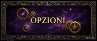

Numerologia
Ogni numero porta una vibrazione cosmica. Calcola il tuo Numero del Sentiero di Vita e il Numero del Destino — e scopri il messaggio che l'universo ha scritto nel giorno in cui sei nato.
Numerologia Pitagorica · Sistema Occidentale🔮 Calcolatore Numerologico
Scegli se calcolare il tuo Numero del Sentiero di Vita (dalla data di nascita) o il Numero del Destino (dal nome completo).
Cos'è la Numerologia
La numerologia è la scienza sacra dei numeri — l'arte di decifrare il linguaggio matematico con cui l'universo ha strutturato la realtà. La sua forma più diffusa in Occidente è la numerologia pitagorica, attribuita al filosofo greco Pitagora (570–495 a.C.), che affermava: "Il numero è la regola di tutte le cose."
Secondo questa visione, ogni numero dall'1 al 9 (più i Numeri Maestro 11, 22 e 33) porta con sé una specifica vibrazione energetica. Quando convertiamo una data di nascita o un nome in un numero, stiamo essenzialmente decodificando quale di queste vibrazioni ha segnato il nostro ingresso in questo mondo — e quindi quale energia fondamentale ci accompagna per tutta la vita.
🔑 La numerologia non predice il futuro in modo deterministico: rivela potenziali, tendenze e disposizioni karmiche. È uno strumento di autoconoscenza, non di fatalismo.
Oltre alla tradizione pitagorica, esistono la numerologia caldea (più antica, usata in Mesopotamia), la numerologia cabalistica (legata all'albero della Vita) e quella vedica (integrata nell'astrologia indiana). In MYSTICA utilizziamo il sistema pitagorico occidentale, il più adatto alla lingua italiana e alle lingue europee.
I Numeri dall'1 al 9
Ogni numero porta un'archetipo, una vibrazione, una missione. Ecco una panoramica dei nove numeri fondamentali:
☀️ 1 — Il Pioniere
Il numero 1 è l'energia del sole — singolare, luminoso, irripetibile. Sei venuto in questo mondo per tracciare strade dove non ce n'erano. Non segui: guidi. Non imiti: crei. La tua vita è un esperimento originale e questo può essere solitario, ma è anche magnifico. Il tuo compito karmico è imparare a guidare senza schiacciare, e a essere indipendente senza diventare incapace di connettersi.
Luci: Iniziativa straordinaria, coraggio pionieristico, forza di volontà che non si arrende, capacità di creare dal nulla, leadership naturale che ispira.
Ombre: Tendenza all'arroganza, difficoltà a ricevere aiuto, egocentrismo nei momenti di stress, impertinenza quando non si è al comando.
🌙 2 — Il Diplomatico
Il numero 2 è l'energia della luna — riflessiva, ciclica, empatica. Sei un essere di relazioni profonde, nato per connettere ciò che è diviso. La tua forza non sta nel fare da solo ma nel fare con. Hai un'intuizione psichica rara e una capacità di comprendere gli altri che spesso ti lascia senza parole.
Luci: Empatia profondissima, diplomazia raffinata, intuizione quasi psichica, dono per le relazioni, pazienza straordinaria, ascolto trasformativo.
Ombre: Indecisione cronica, eccessiva dipendenza dall'approvazione altrui, tendenza a dissolversi nelle relazioni, paura del conflitto anche quando è necessario.
🎨 3 — Il Creativo
Il numero 3 è la vibrazione della creazione pura — la trinità che genera tutto ciò che esiste. Sei nato con un dono espressivo che può manifestarsi come arte, parole, musica, umorismo o presenza magnetica. Quando sei al tuo meglio, porti gioia autentica nel mondo semplicemente essendo te stesso.
Luci: Creatività abbondante, comunicazione brillante, ottimismo contagioso, magnetismo naturale, senso dell'umorismo che guarisce, gioia come dono spirituale.
Ombre: Dispersione delle energie su troppi fronti, superficialità nella profondità emotiva, tendenza a evitare i problemi attraverso l'umorismo, incompletezza dei progetti.
🏛️ 4 — Il Costruttore
Il numero 4 è l'energia della terra — solida, affidabile, capace di costruire ciò che dura secoli. Sei venuto a creare fondamenta su cui altri possono edificare la loro vita. Il tuo lavoro è metodico, preciso, paziente. Dove altri vedono sacrificio, tu vedi investimento.
Luci: Affidabilità assoluta, disciplina fuori dal comune, capacità costruttiva concreta, pazienza infinita per i dettagli, dedizione che non si arrende.
Ombre: Rigidità di pensiero, difficoltà ad adattarsi ai cambiamenti, tendenza al workaholic, resistenza all'innovazione, incapacità di godere del processo.
🦋 5 — Il Libero
Il numero 5 è la vibrazione della libertà assoluta — il vento che non può essere imprigionato. Hai bisogno di varietà, movimento, esperienze nuove come altri hanno bisogno d'aria. La tua vita ideale è una serie di capitoli completamente diversi l'uno dall'altro.
Luci: Adattabilità straordinaria, coraggio verso l'ignoto, curiosità insaziabile, versatilità nel talento, capacità di prosperare nel cambiamento.
Ombre: Incostanza, difficoltà a completare i progetti, tendenza all'eccesso nelle piacevoli distrazioni, paura dell'impegno a lungo termine, dispersione.
💚 6 — Il Nutrimento
Il numero 6 è la vibrazione dell'amore in azione — non l'amore romantico ma quello cosmico, il tipo di amore che si manifesta come cura, presenza, nutrimento. Sei qui per costruire ambienti dove gli altri fioriscono. La tua casa, il tuo spazio, le tue relazioni portano il tuo tocco curativo.
Luci: Amore incondizionato, dono per la cura e la guarigione, senso della responsabilità, capacità di creare armonia, bellezza che manifesta nell'ambiente.
Ombre: Tendenza al martirio emotivo, perfezionismo nell'ambiente, ingerenza nelle scelte altrui per amore, difficoltà a lasciare andare.
🔭 7 — Il Cercatore
Il numero 7 è la vibrazione del mistero — il numero del sacro, del cercare, del penetrare le superfici. Hai un'intelligenza penetrante che non accetta le risposte facili. Sei un cercatore di verità in tutte le sue forme — scientifiche, spirituali, filosofiche.
Luci: Intelligenza analitica profonda, intuizione mistica, dono per la ricerca e la comprensione, onestà intellettuale assoluta, profondità spirituale autentica.
Ombre: Tendenza all'isolamento, difficoltà a fidarsi degli altri, cinismo difensivo, perfezionismo paralizzante, freddezza emotiva come scudo.
⚡ 8 — Il Potere
Il numero 8 è la vibrazione del potere cosmico — il simbolo dell'infinito in piedi. Sei qui per padroneggiare il mondo materiale, non per servirlo. Denaro, potere, autorità — questi non sono i tuoi obiettivi, sono i tuoi strumenti. Quando li gestisci con saggezza e giustizia, crei prosperità che beneficia molti.
Luci: Forza esecutiva straordinaria, visione strategica a lungo termine, determinazione invincibile, capacità di creare abbondanza, autorità naturale rispettata.
Ombre: Tendenza al controllo, difficoltà a delegare, ossessione per il successo a scapito delle relazioni, attrazione per il potere senza etica.
🌌 9 — Il Saggio Universale
Il numero 9 è la vibrazione della fine e della completezza — il numero che contiene tutti gli altri. Hai vissuto molte esperienze, e questo ti ha dato una comprensione dell'anima umana che altri non riescono a toccare. Sei nato per servire qualcosa di più grande di te.
Luci: Saggezza profonda che trascende l'esperienza diretta, compassione universale, generosità senza confini, visione che abbraccia tutta l'umanità, capacità di guarire le ferite più antiche.
Ombre: Difficoltà a lasciare andare, tendenza al martirio, eccessiva sensibilità alle sofferenze altrui, impraticità nei dettagli quotidiani.
I Numeri Maestro: 11, 22, 33
I Numeri Maestro sono vibrazioni elevate che non vengono ridotte ulteriormente durante il calcolo. Portare un Numero Maestro significa avere una missione karmica più intensa — e sfide proporzionalmente più grandi.
L'11 è il primo Numero Maestro — una vibrazione elevata che non tutti sono pronti a portare. Sei un canale tra il visibile e l'invisibile, tra il quotidiano e il trascendente. La tua intuizione non viene dalla logica ma da qualcosa di più antico. Hai l'incarico di ispirare, di illuminare, di essere un faro per chi è al buio.
Luci: Intuizione quasi psichica, capacità di ispirare e illuminare, visione del futuro, dono per la guarigione spirituale, presenza carismatica che eleva.
Ombre: Estremamente sensibile alle energie negative, tendenza all'esaurimento nervoso, difficoltà a "stare nel mondo pratico", cicli di luce e buio molto pronunciati.
Il 22 è il Numero Maestro della costruzione — la capacità di prendere sogni impossibili e renderli realtà concrete. Hai la visione dell'11 e la capacità pratica dell'8 moltiplicata. Non sei qui per fare cose piccole. Le strutture che costruisci — fisiche, intellettuali, spirituali — sono destinate a durare generazioni.
Luci: Capacità di manifestare visioni straordinarie, leadership monumentale, dono per costruire sistemi che durano, disciplina fuori dal comune, eredità che trascende il singolo.
Ombre: Tendenza all'eccesso di ambizione, difficoltà nelle relazioni intime per l'intensità del focus, possibile rigidità nel voler controllare la propria creazione.
Il 33 è il Numero Maestro dell'amore compassionevole — la vibrazione del guaritore cosmico, del maestro spirituale, del portatore di luce che ama incondizionatamente. Pochissime anime sono pronte per questa vibrazione. Se il tuo numero è 33, sei qui con una missione di amore su scala globale.
Luci: Amore incondizionato su scala cosmica, dono guaritore straordinario, capacità di trasformare chi ti avvicina, saggezza che trascende la comprensione ordinaria.
Ombre: Estremamente vulnerabile all'energia negativa, tendenza all'esaurimento totale, difficoltà a incarnare la propria vibrazione elevatissima nel quotidiano.
⚠️ Attenzione: il 33 come Numero del Sentiero di Vita è estremamente raro. Molti sistemi richiedono che il 33 emerga senza forzature dalla somma naturale delle cifre. Se ottieni 33 come intermedio ma poi si riduce ulteriormente, il tuo numero è 6 con influenze del 33.
Tabella Pitagorica: Lettere e Numeri
Per calcolare il Numero del Destino si converte ogni lettera del nome completo alla nascita nel suo valore numerico pitagorico. Questa è la tabella di corrispondenza:
| 1 | 2 | 3 | 4 | 5 | 6 | 7 | 8 | 9 |
|---|---|---|---|---|---|---|---|---|
| A | B | C | D | E | F | G | H | I |
| J | K | L | M | N | O | P | Q | R |
| S | T | U | V | W | X | Y | Z | — |
💡 Esempio: MARIO → M(4) + A(1) + R(9) + I(9) + O(6) = 29 → 2+9 = 11. Mario ha un Numero del Destino 11.
Come Calcolare i Tuoi Numeri
Numero del Sentiero di Vita (dalla data di nascita)
- Scrivi la tua data di nascita nel formato GG/MM/AAAA.
- Somma tutte le cifre della data (giorno + mese + anno).
- Se la somma supera 9, riduci ulteriormente sommando le cifre del risultato.
- Fermati quando ottieni un numero da 1 a 9, oppure 11, 22 o 33.
📅 Esempio — 15 aprile 1990:
1+5+0+4+1+9+9+0 = 29
2+9 = 11 ✦ Numero Maestro — non si riduce ulteriormente.
📅 Esempio — 3 luglio 1985:
0+3+0+7+1+9+8+5 = 33
33 è Numero Maestro — ci fermiamo qui.
📅 Esempio — 22 novembre 1993:
2+2+1+1+1+9+9+3 = 28
2+8 = 10 → 1+0 = 1 (Sentiero di Vita 1).
Numero del Destino (dal nome)
- Scrivi il tuo nome completo così come appare sul documento di nascita (incluso cognome).
- Converti ogni lettera in numero usando la tabella pitagorica qui sopra.
- Somma tutti i numeri ottenuti.
- Riduci il totale fino a 1–9 o a un Numero Maestro (11, 22, 33).
⚠️ Importante: usa sempre il nome alla nascita, quello sul certificato. Diminutivi, nomi d'arte o nomi assunti dopo il matrimonio si calcolano separatamente e rivelano energie diverse.
Cicli Numerologici: Anno, Mese e Giorno Personale
Oltre ai numeri permanenti (Sentiero di Vita e Destino), la numerologia prevede cicli temporali che cambiano nel tempo e rivelano le energie di periodi specifici.
🗓️ Anno Personale
Si calcola sommando il tuo giorno e mese di nascita con l'anno corrente. L'Anno Personale segna il tema energetico dominante per l'intero anno solare. È un ciclo di 9 anni che si ripete:
Anni 1-3: costruzione e semina nuova · Anni 4-6: consolidamento e maturazione · Anni 7-9: completamento, raccolta e lasciar andare.
📆 Mese Personale
Si ottiene sommando il tuo Anno Personale al numero del mese corrente. Offre una guida più precisa sulle energie di ogni singolo mese — utile per pianificare momenti propizi per nuovi inizi, riflessione, o chiusura di cicli.
🌀 I cicli numerologici si intrecciano con i transiti planetari dell'astrologia per formare una mappa temporale ancora più dettagliata. Esplora anche i Cicli del Tempo per approfondire.
Numerologia: La Scienza Sacra dei Numeri tra Storia e Significato

Da Pitagora alla Numerologia Moderna
La numerologia è l'arte di decifrare il linguaggio matematico con cui l'universo ha strutturato la realtà. La forma più diffusa in Occidente è la numerologia pitagorica, attribuita a Pitagora di Samo (570–495 a.C.), che insegnava che ogni numero porta una specifica vibrazione energetica e che "tutto è disposto secondo numero". Convertendo la data di nascita o il nome completo in un numero, si decodifica quale di queste vibrazioni ha segnato il nostro ingresso nel mondo — e quale energia fondamentale, tra le nove disponibili, ci accompagna silenziosamente per tutta la vita, influenzando scelte, talenti e sfide karmiche.
Le radici della numerologia affondano in civiltà antichissime, ben prima che Pitagora sistematizzasse il suo metodo. I Babilonesi usavano il sistema numerico a base 60 per calcolare cicli celesti e destini regali, mentre gli Ebrei svilupparono la Gematria, dove ogni lettera dell'alfabeto ebraico corrisponde a un numero sacro (ad esempio YHWH = 26). La Kabbalah ebraica si fonda proprio su questo sistema per decodificare i significati nascosti nei testi sacri. In Cina, la numerologia è ancora oggi praticata attivamente nella scelta del nome dei neonati e nella selezione delle date propizie per i matrimoni e le aperture di attività commerciali.
Nel Rinascimento, il filosofo e occultista tedesco Enrico Cornelio Agrippa von Nettesheim codificò nel trattato "De Occulta Philosophia" (1531) un intero sistema di numeri magici messi in relazione con i pianeti e le gerarchie angeliche, gettando le basi per gran parte dell'esoterismo numerologico successivo. Nel XIX secolo la numerologia giunse negli Stati Uniti attraverso il movimento New Thought, che ne fece uno strumento di crescita personale, e fu Mrs. L. Dow Balliett, nel 1900, a sistematizzare definitivamente il metodo pitagorico moderno così come oggi lo conosciamo e utilizziamo su MYSTICA.
I 9 Numeri Fondamentali e la Loro Vibrazione
Il sistema pitagorico usa una tavola semplice ma potente: A=1, B=2, C=3, D=4, E=5, F=6, G=7, H=8, I=9, per poi ricominciare da 1 con la lettera J. Per calcolare il Numero del Sentiero di Vita si sommano tutte le cifre della data di nascita, riducendo progressivamente il risultato fino a ottenere un numero singolo. I Numeri Maestro (11, 22 e 33) rappresentano un'eccezione fondamentale: non vengono mai ridotti ulteriormente, perché incarnano vibrazioni di potenza particolarmente elevata, con missioni karmiche più intense e complesse rispetto agli altri numeri della sequenza da 1 a 9.
Oltre alla tradizione pitagorica, esistono altri sistemi altrettanto affascinanti: la numerologia caldea (più antica, nata in Mesopotamia e basata su un'assegnazione diversa dei valori alle lettere), la numerologia cabalistica (legata all'Albero della Vita e ai suoi 10 Sephirot) e quella vedica (integrata profondamente nell'astrologia indiana attraverso i 9 Graha, i pianeti sacri). Ogni sistema ha le proprie specificità metodologiche, ma tutti concordano su un punto fondamentale condiviso: i numeri non sono semplici quantità astratte — sono qualità, energie viventi, archetipi. La numerologia, in ogni sua forma, non predice il futuro in modo deterministico: rivela potenziali, tendenze e disposizioni karmiche da vivere consapevolmente.
FAQ
Somma tutte le cifre della tua data di nascita fino a ottenere un numero singolo (o 11, 22, 33). Esempio: 15/04/1990 → 1+5+0+4+1+9+9+0 = 29 → 2+9 = 11. Poiché 11 è un Numero Maestro, ci si ferma qui.
I Numeri Maestro (11, 22, 33) sono vibrazioni elevate che non vengono ridotte. L'11 porta intuizione estrema e sensibilità psichica. Il 22 ha la capacità di costruire opere che durano nel tempo. Il 33 è il Maestro Guaritore, con una vocazione al servizio compassionevole. Portano grandi doni e grandi sfide.
Il Numero del Sentiero di Vita (dalla data di nascita) rappresenta la lezione karmica principale e il percorso generale della vita. Il Numero del Destino (dal nome) rivela i talenti naturali e come ti esprimi nel mondo. Insieme formano un ritratto numerologico completo.
Sì. La pitagorica assegna i numeri 1-9 in sequenza ciclica alle lettere ed è la più usata in Occidente. La caldea, più antica (Babilonia 4000 a.C.), usa un sistema diverso e considera il 9 un numero talmente sacro da non assegnarlo direttamente alle lettere. MYSTICA usa il sistema pitagorico.
Sì. Il profilo numerologico completo include: Sentiero di Vita, Numero del Destino, Numero dell'Anima (solo vocali del nome), Numero della Personalità (solo consonanti), Anno Personale. Ognuno rivela un aspetto diverso. Con il Premium MYSTICA puoi calcolarli tutti insieme.
Il Numero del Sentiero di Vita (dalla data di nascita) non cambia mai. Il Numero del Destino può cambiare se cambi il tuo nome legale. Molti numerologi considerano valido anche il nome adottato nella vita quotidiana accanto al nome di nascita, come un'energia aggiuntiva.
✦ Approfondisci con MYSTICA ✦
Usa il calcolatore qui sopra e poi esplora l'app completa per tarocchi, I Ching, astrologia, rune e molto altro — tutto gratis e in italiano.
🔍 Scopri le Altre Categorie